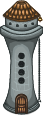

<ion-header>
  <ion-toolbar>
    <ion-buttons slot="start">
      <ion-button (click)="back()">
        <ion-icon slot="icon-only" name="arrow-back"></ion-icon>
      </ion-button>
    </ion-buttons>
    <ion-title>Yolculuğun</ion-title>
  </ion-toolbar>
</ion-header>

<ion-content>
  <ion-card class="nes-container is-rounded no-padding card" color="light">
    <ion-card-title class="card-title">Yolculuğun</ion-card-title>
    <!-- <ion-slides> -->
    <!-- <ion-slide> -->
    <div class="img-container">
      
    </div>
    <div style="text-align:center">
      <br />
      <ion-label>Altuğ'un Piksel Köyü'ndeki Yolculuğu</ion-label><br />
      <ion-avatar class="item-avatar">
        
      </ion-avatar>
    </div>
    <!-- </ion-slide> -->
  </ion-card>
  <ion-card class="nes-container is-rounded no-padding card" color="light">
    <ion-card-title class="card-title">Tamamladıklarım</ion-card-title>
    <ion-slides>
      <ion-slide *ngFor="let new of Steps">
        <ion-card
          class="nes-container is-rounded no-padding card"
          color="light"
        >
          <div>
            <div class="dc">
              <ion-checkbox
                slot="start"
                [checked]="new.completed"
                class="checkbox"
              ></ion-checkbox>
              <ion-icon [name]="new.logo"></ion-icon>
            </div>

            <p>{{ new.title }}</p>
            <ion-progress-bar
              color="tertiary"
              buffer=".4"
              [value]="new.progress"
            ></ion-progress-bar>
          </div>
        </ion-card>
      </ion-slide>
    </ion-slides>
  </ion-card>
</ion-content>
